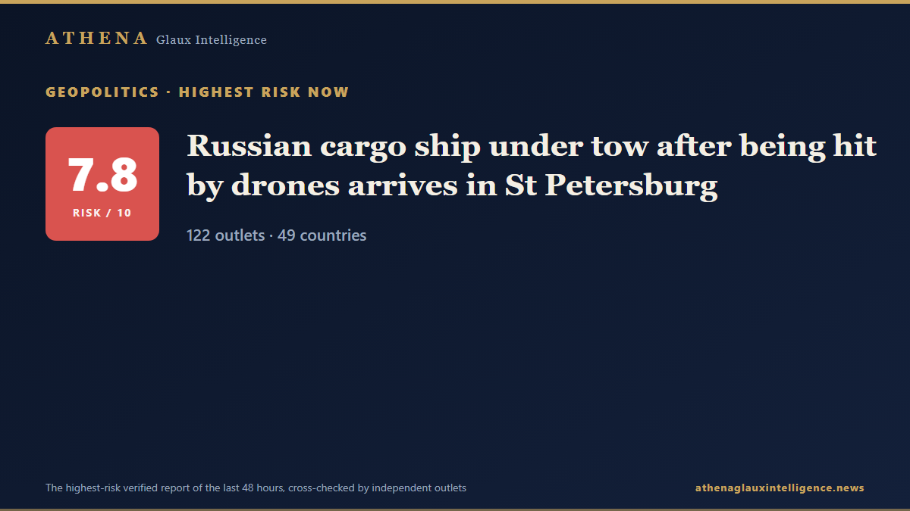
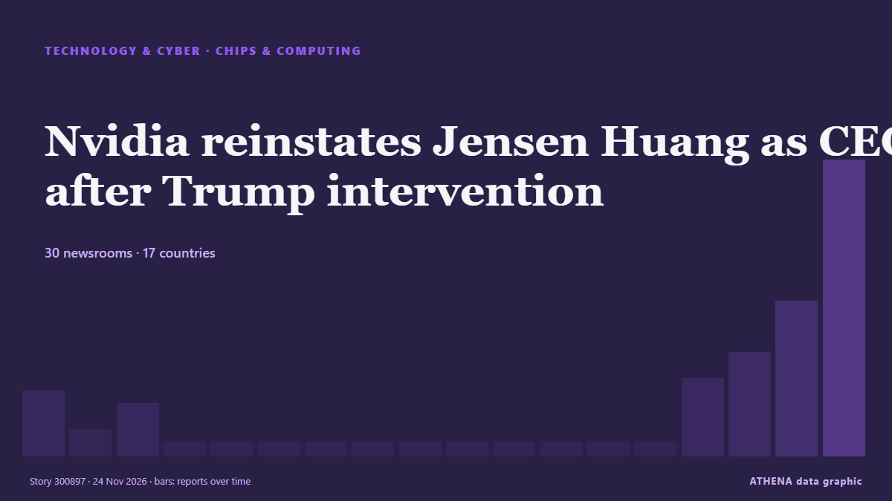

Risk 7.8Elevated
ATHENA Glaux Intelligence — Global news intelligence — every number explained
Geopolitics
All geopolitics >Highest risk now

Rising riskRisk up in the last 24 hours
Maritime & shipping
Maritime desk >Highest risk now
Risk 7.6Elevated
Endurance athlete swims in Strait of Hormuz to highlight Iran war's impact on wildlife
Read the evidence ›
Watch listChokepoints, ports and other shipping reports
- Strait of HormuzDisruptedattack / strike · risk 7.6 · 22 newsrooms (72 h)
- Kerch Strait / Black SeaDisruptedattack / strike · risk 7.8 · 123 newsrooms (72 h)
- Danish Straits / BalticDisruptedattack / strike · risk 7.8 · 123 newsrooms (72 h)
Every headline, checked across countries.
ATHENA Glaux reads 632 news outlets worldwide. A story becomes a verified event only when independent outlets report it. Each event shows who was first and a risk score with its reasons.
1,258events in 24 hours
632outlets followed
36minutes between updates
Earthquake or flood near you this week?
Type your town and see the earthquakes, floods, storms and official warnings near it, with a 72-hour emergency kit checklist. Free, no sign-up, and your place stays on your device.
Reports drift in from independent outlets - when two meet on the same story, it becomes a verified event.
How ATHENA checks a story
- CollectReports arrive from independent outlets in many countries.
- MatchWhen two outlets meet on the same story, it becomes a verified event.
- ExplainEach event shows who was first, how far it spread and why the risk is what it is.
Global risk outlook
Weekly and monthly reviews: the highest-risk events, the trends by domain and region, and what to watch next.
Read the outlook ›Daily briefing
The ten most important world events of the day, the rising risks and the new events, with every number explained.
Open today's briefing ›
Technology & CyberNvidia reinstates Jensen Huang as CEO after Trump intervention
Nvidia NVDA.O reinstated Jensen Huang as CEO on Monday under pressure from US President Donald Trump, a stunning reversal following his resignation over revelations of extramarital affairs, drawing… from Cyprus Mail
7.2Importance
2.9Risk · moderate
86%Confidence
Geopolitics
Ukraine sank Russian corvette Merkury off Libya: Zelenskyy
A Russian Navy guided-missile corvette – assessed to be the Project 20380 Steregushchiy-class warship Merkury – has been engulfed in flames following an explosion in the Libyan port of Benghazi… from Kyiv Post
Geopolitics
European Commission presents 22nd package of sanctions against Russia
The European Commission has presented its 22nd package of sanctions against Russia. from Ukrinform (English)
Sponsored
Cybernetics and Artificial Intelligence Lab Welcome to the Cybernetics and Artificial Intelligence Laboratory, established at the Department of Business Administration of the National and Kapodistrian University of Athens. The lab is headed by Professor Dimitrios Thomakos. The lab aims to do research that can be published in top venues. Our research uses tools and methods of Artificial Intelligence, and lies in the following areas: - Forecasting - Decision making - Cyber security - Finance We are always looking forward to collaborating with exceptional students!
Learn more – Cybernetics and Artificial Intelligence LabShips at the world's chokepoints now
Live AIS counts. Tap or hover a bar for the detail.
Latest reports
Sheikh Hasina seeks to return to Bangladesh on December 16 on state carrier
Singapore raises 2026 growth forecast to ‘around 6%’; Q3 GDP revised up at 6.1%
Russian aircraft enter South Korea’s air defence zone
N. Korea threatens to close Swiss diplomatic office
Rep. Jimmy Gomez to resign after House ethics panel sexual misconduct report
US targets Iran’s shadow banking ‘lifeline’ with new sanctions
German defense chief warns of risk of Ukraine conflict spreading to Baltic Sea region
EU to ban Russian flags and teams at European sports events, in new sanctions round
Technology & Cyber
NATO vows space defence after Russia nuclear satellite report
German media has reported that Russia plans to launch a satellite dubbed “Sputnik-S”, reportedly equipped with a nuclear warhead, in the coming weeks. from The Straits Times
Energy & Environment
COP31 ends in failure as countries split over fossil fuels, climate finance
COP31 ended without a consensus deal for the first time since 2009. from Ars Technica
Geopolitics
'Jewish terrorism': Eisenkot condemns West Bank arson attacks
Israeli opposition leader Gadi Eisenkot has condemned Israeli settler attacks in the occupied West Bank as "Jewish terrorism". from The New Arab
Geopolitics, Politics & Security
More ›Elections & politics
Van Hollen backs populism in challenge to Schumer
Closed-door secret-ballot vote to take place next month as El-Sayed, Sanders rally behind Van Hollen. from Express Tribune
- Elections & politics
Netanyahu, Eisenkot Fail To Seal A Deal, Israel Government Deadlock Stays
- Defence & national security
Russia could put nuclear weapon in orbit by end of 2026, German media report
- Diplomacy & summits
Zelensky urges four-way peace talks with Russia, Europe and US 'as soon as possible'
- Wars & conflicts
Saudi Arabia intercepts Houthi drone targeting Riyadh
Economics, Finance & Markets
More ›Commodities & market stress
Oil prices exceed $92 on global commodity markets
Retail fuel prices in Cambodia fell again yesterday following a decline in international oil markets, according to the Ministry of Commerce. from Khmer Times
- Stocks, bonds & markets
DR Congo reimposes cobalt export ban to shore up prices
- Crypto & digital assets
US seeks to recover more than €900bn from Binance hack
- Housing & real estate
Illegal property purchases down after Aykut conviction, president says
- Inflation & interest rates
5 Energy Stocks That Can Shrug Off a December Fed Rate Hike
Trade, Industry & Infrastructure
More ›Aviation, rail & road
PM Modi Announces Rs 15,000-Crore Development Package For Nepal
The two leaders virtually laid the foundation of several India-assisted projects in Nepal and flagged off a cross-border passenger rail link between Ayodhya in Uttar Pradesh and Janakpur Dham in… from NDTV World
- Shipping & ports
Three tankers explode in Strait of Hormuz
- Construction & infrastructure
[UPDATED] Anwar: Turkiye not ready to accept 10,000 Rohingya refugees from Malaysia [WATCH]
- Shipping & ports
Bahrain accuses Iran of striking industrial site as tankers hit in Hormuz
- Shipping & ports
Cool Carriers Welcomes Snow Land, First Reefer with Gate Rudder
Energy, Resources & Environment
More ›Pollution & biodiversity
Turkish authorities search for lioness spotted on outskirts of Istanbul
A resident spotted the animal in the evening on Nov 22. from The Straits Times
- Extreme weather & natural disasters
5.3 Magnitude Earthquake Hits Nepal, Tremors Felt Across India, Bhutan, China
- Energy security
China, US and Russia leaders pledge to boost refined fuel output
- Climate & climate policy
‘Worst COP ever’: Climate talks collapse after draft deal fails to include fossil fuels
- Extreme weather & natural disasters
San Francisco is enjoying an AI boom, but worries about a crash are growing
Technology, AI & Cybersecurity
More ›Chips & computing
US blacklists 3 Malaysian firms over AI chip concerns
Commerce department restricts Speedmatrix, MSFusion and PT Megaspeed, among seven other companies, from gaining access to American goods and technology. from Free Malaysia Today
- Cybersecurity
GTA VI hacker released despite being sentenced to 7 years in UK prison
- Artificial intelligence
Virginia, Oregon sue Musk's SpaceX over Grok AI's creation of child sexual abuse images and videos
- Media & disinformation
Lough Neagh book reveals warnings of wastewater treatment ‘disaster‘ due to NI Water funding cut
- Artificial intelligence
Amazon Acquires Tech and Staff From AI Startup Decart
Business, Companies & Investment
More ›Boards & executives
Muhammad Zeeshan Ali to board China's space station as first foreign astronaut
This latest astronaut mission comes more than three years after entrepreneur and adventurer Namira Salim became the first Pakistani to travel to space aboard a Virgin Galactic suborbital space… from NDTV
- Corporate strategy
Google to shut down Nest app, Google Assistant on smart home devices in 2027
- Sectors & company risks
18,135 Hotels Join European Lawsuit Against Booking.com
- Sectors & company risks
De Lima seeks state of calamity declaration over El Niño
- Startups & innovation
Greek Innovation Takes Centre Stage at Helsinki
Accidents & emergencies
More ›Accidents & emergencies
Bus and truck collision kills 11 in UAE’s Ras Al Khaimah
Eleven people were killed when a passenger bus and a truck collided in Ras Al Khaimah, one of the seven emirates that make up the United Arab Emirates, the country’s interior ministry said on Tuesday. from Cyprus Mail
- Accidents & emergencies
Zanzibar Fire Damages Hotels and Shops
- Accidents & emergencies
Local people say they warned about illegal scramblers before hit-and-run death of John Queenan (62) in Ballina
- Accidents & emergencies
Three pedestrians killed on Irish roads since Friday as man (40s) dies after being struck by car in Donegal
- Accidents & emergencies
The 1976 Plane Crash in Greece That Killed All 50 On Board
Three ways to read today
Start with the one that fits your timeVerified events
Ranked by how widely they are reported
- Nvidia reinstates Jensen Huang as CEO165 outlets · 54 countriesRisk 4.8
- COP31 reaches agreement on 36 issues despite final pact deadlock121 outlets · 53 countriesRisk 2.8
- Zelenskyy hails Ukraine's attack on a Russian warship docked at naval base in Libya116 outlets · 45 countriesRisk 6.6
- Indonesia probes factory fire that left 34 people missing54 outlets · 31 countriesRisk 6.6
- Asian markets surge on Nvidia rehiring Jensen Huang69 outlets · 30 countriesRisk 3.5
Assessment Desk
Ask a question and read a reasoned assessment of a leading story, with what would prove it wrong.
Open the Assessment Desk ›Today in numbers
| 09:00 | 632 |
|---|---|
| 10:00 | 923 |
| 11:00 | 326 |
| 12:00 | 160 |
| 13:00 | 441 |
| 14:00 | 500 |
| 15:00 | 650 |
| 16:00 | 338 |
| 17:00 | 419 |
| 18:00 | 447 |
| 19:00 | 418 |
| 20:00 | 427 |
| 21:00 | 182 |
| 22:00 | 564 |
| 23:00 | 242 |
| 00:00 | 379 |
| 01:00 | 357 |
| 02:00 | 293 |
| 03:00 | 361 |
| 04:00 | 205 |
| 05:00 | 420 |
| 06:00 | 307 |
| 07:00 | 449 |
| 08:00 | 319 |
Risk of today's events
Geopolitics103Economy & Markets34Trade & Industry33Technology & Cyber32Business29Energy & Environment25Maritime10
Emerging signals
- New name in the news · Active nowLibya. Ukraine
- Sudden surge · Active nowIran-related
- Sudden surge · Active nowEsmaeil Baghaei
- Sudden surge · Active nowConnor
- Sudden surge · Active nowNepal
Official warnings
- M 6.5 - Vanuatu regionM6.5 · USGS ·
- M 5.9 - 238 km SW of Yanglong, ChinaM5.9 · PAGER yellow · USGS ·
Stay informed
ATHENA Weekly Risk Picture
The week's biggest geopolitical, economic and shipping risks, cross-checked and scored.
Every Friday at 08:00 Athens time · free · in English
Subscribe freeATHENA on Telegram
News the moment it is published: breaking events at risk 6 or more, an hourly round-up, risk-tracker updates and the daily briefing at 10:00.
Free · posts in English · leave at any time
Join the channelSign-up is handled by beehiiv with double opt-in: nothing you type is sent to ATHENA, and every issue has an unsubscribe link.
Risk trackers
More ›Strait of HormuzRisk 7.610 new this week · down from 37 the week beforeRed Sea shippingRisk 6.027 new this week · down from 45 the week beforeGreece–Turkey relationsRisk 3.55 new this week · down from 8 the week beforeCyprusRisk 5.014 new this week · about the same as the week beforeSanctions on RussiaRisk 6.614 new this week · about the same as the week beforeRussia–Ukraine warRisk 7.1225 new this week · down from 277 the week beforeIsrael, Gaza & the West BankRisk 6.668 new this week · down from 86 the week beforeTaiwan StraitRisk 3.18 new this week · down from 20 the week beforeOil & gas pricesRisk 2.926 new this week · down from 49 the week beforeSuez CanalRisk 0.00 new this week · down from 3 the week beforeTurkish StraitsRisk 0.00 new this weekPanama CanalRisk 0.00 new this weekShadow fleetRisk 0.01 new this week · down from 4 the week beforeBlack Sea shippingRisk 0.02 new this week · down from 5 the week beforeCentral banks & interest ratesRisk 4.239 new this week · about the same as the week beforeGreek economyRisk 0.89 new this week · about the same as the week beforeEastern Mediterranean energyRisk 0.00 new this week · down from 4 the week beforeBalkansRisk 3.014 new this week · down from 24 the week beforeMediterranean migrationRisk 0.00 new this week · down from 4 the week before
Global risk outlook — week 48, 2026 (23–29 Nov) ›
Around the world
Middle East & North AfricaBahrain says Iranian attack hits industrial facility, causes fire
57 events
Southeast AsiaVietnam Embassy celebrates Vietnamese Culture Day in Phnom Penh
55 events
North AmericaNvidia reinstates Jensen Huang as CEO
54 events
South AsiaIndonesia probes factory fire that left 34 people missing
51 events
Russia & EurasiaEstonia to close border with Russia for at least six months
44 events
East AsiaLee names new FM, 3 other ministers, spy chief
44 events
Sub-Saharan AfricaCOP31 ends in failure as countries split over fossil fuels, climate finance
42 events
Latin America & CaribbeanTrump eyes Iran strikes after New Year if no deal reached
26 events